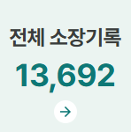
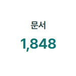

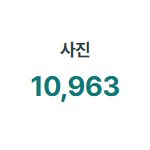
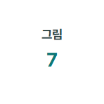

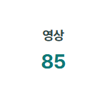
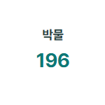
온라인 전시

-
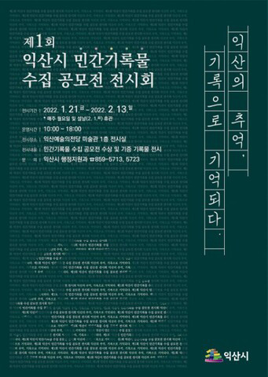
익산의 추억, 기록으로 기억되다
-

익산교육의 발자취, 기록으로 말하다
-
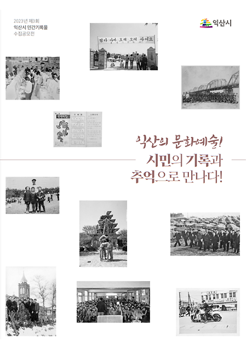
익산의 문화예술! 시민의 기록과 추억으로 만나다!
-
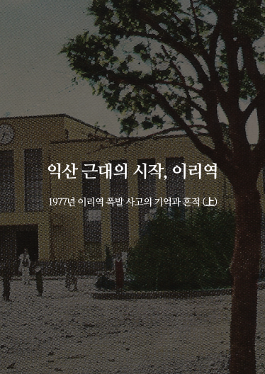
익산 근대의 시작, 이리역
컬렉션
-
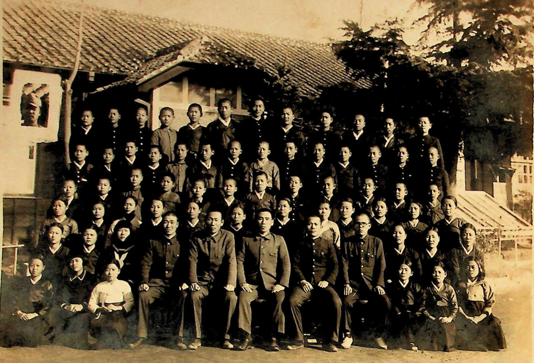
익산시 소장 기록
-
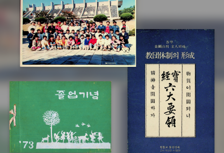
공모전 기록
-
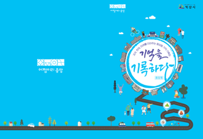
분야별기록
함께 만드는 지도
‘어디서나, 누구나’ 익산에 대한 기록을 남길 수 있는 함께 만드는 지도
함께 만드는 지도 바로가기 →
-
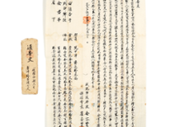
통고문(通告文)
2024-01-04공모전 기록물
-
이길여 박사 영상
2024-01-04공모전 기록물
-
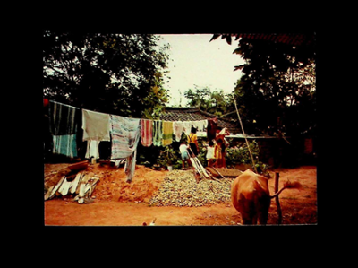
1980년대와 90년대 왕궁면 사곡마을 사진
2024-01-04공모전 기록물
-
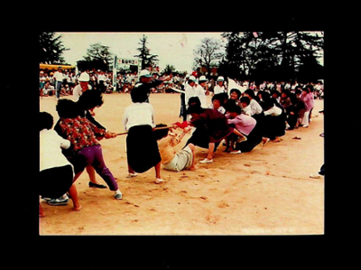
왕궁국민학교 운동회 관련 사진/h3>
2024-01-04공모전 기록물
명예의 전당
-
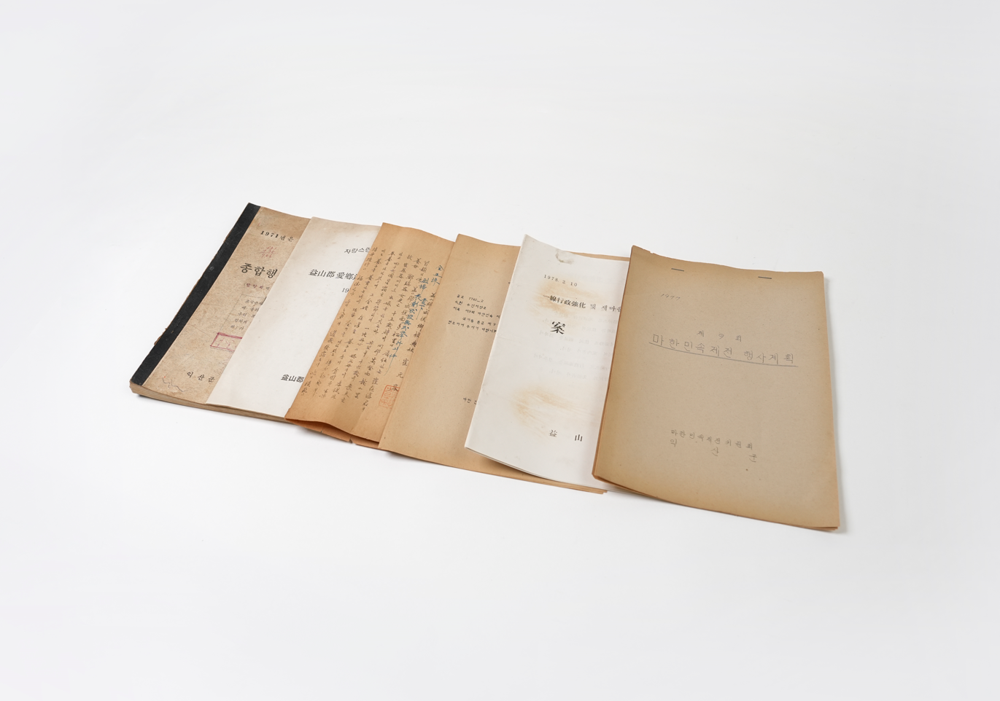
백강흠
-
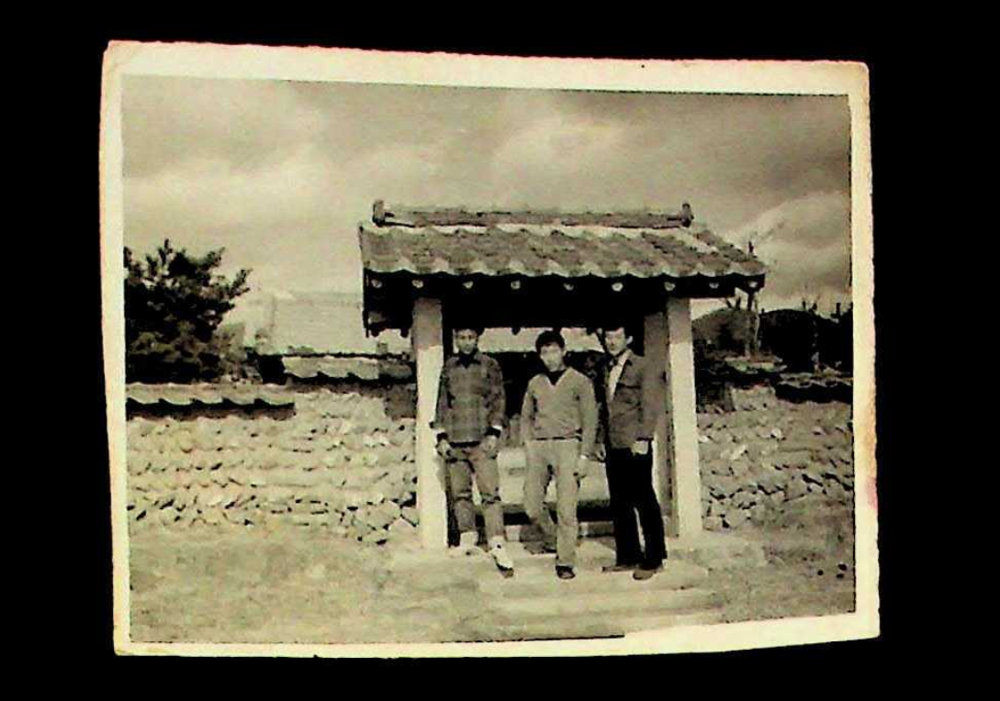
이광희
-
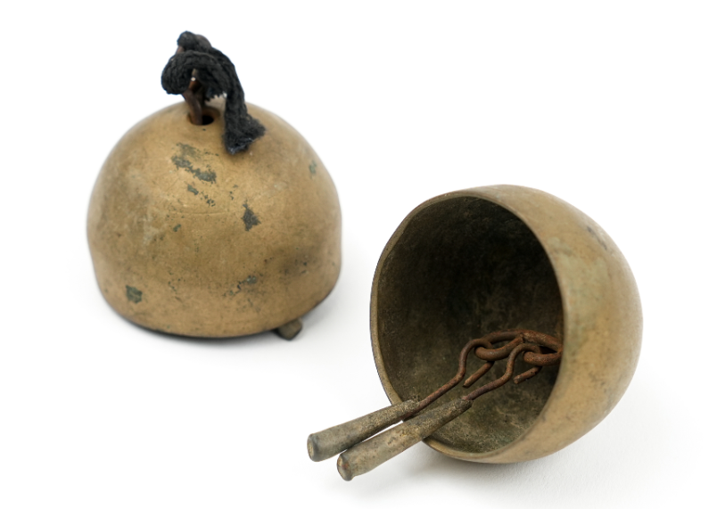
송양석
-
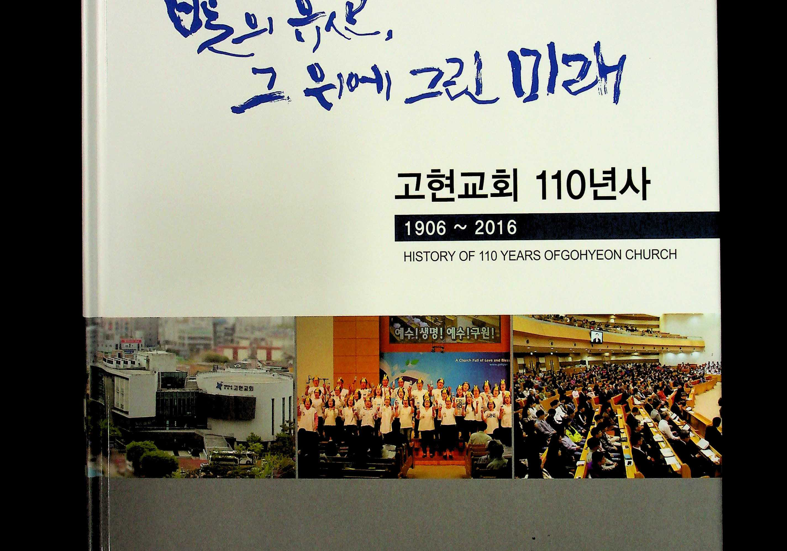
교현교회
영상
익산시민간 기록시민활동가 양성과정
기록집
익산시 문화예술인 인터뷰로
오디오북
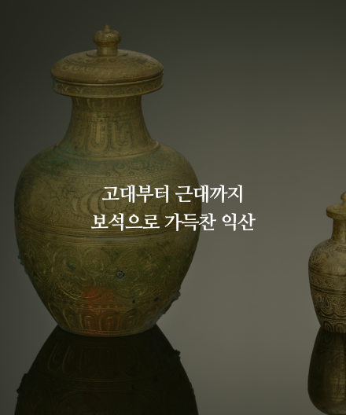
고대부터 근대까지 보석으로 가득찬 익산
공지사항
-
『익산시민역사기록관』 MI 디자인 선정 선호도 조사
익산시는 도시의 변천, 생활상 등 익산의 정체성을 확고히 하는 귀중한 기록유산을 후대에 전승하기 위하여, 2021년부터 민간기록물 공모전을 통하여 익산의 기록물을 수집 기증받았습니다. 이러한 익산의 역사문화자산을 보존ㆍ관리하고 상설 전시로 많은 이들과 함께하기 위하여, 2024년 하반기 준공 예정인 <익산시민역사기록관>을 평화동 옛 익옥수리조합 건물에 조성중에 있으며, <익산시민역사기록관>의 정체성과 방향성을 결정하는 MI 디자인의 선정을 위하여 여러분의 고견을 듣고자 합니다. ‣ 기간: 2024. 9. 2.(월) ~ 9. 18.(수) / 17일간 ‣ 설문조사 바로가기 https://naver.me/x677Mf4f
2024.09.05
-
제4회 익산시 민간기록물 수집 공모전 전시회
제4회 익산시 민간기록물 수집 공모전 전시회를 개최하오니,참석하시어 자리를 빛내어주시면 감사하겠습니다. ◆ 행사명 : 제4회 익산시 민간기록물 수집 공모전 전시회◆ 주 제 : 공간으로 추억하는 당신의 익산 ◆ 전시기간 : 2024. 9. 19.(목) ~ 10. 15.(화) ※ 매주 월요일 휴관◆ 장소 : 익산예술의전당 미술관 1층 전시실◆ 운영시간 : 10:00 ~ 18:00 / 무료관람◆ 문의 : 행정지원과 기록물관리계 859-5736, 5723, 5713 ※ 개막식 & 시상식◆ 일시 : 2024. 9. 19.(목) 14:30 ◆ 장소 : 익산예술의전당 미술관 세미나실
2024.09.09
시민기록활동가
-
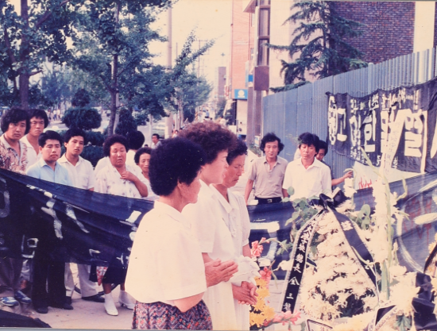
익산민주화운동 정리 사진
-
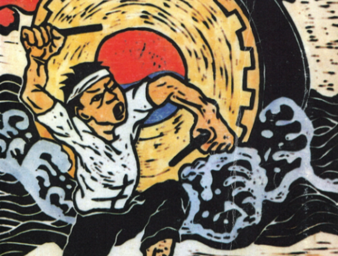
익산의 노동운동과 농민운동